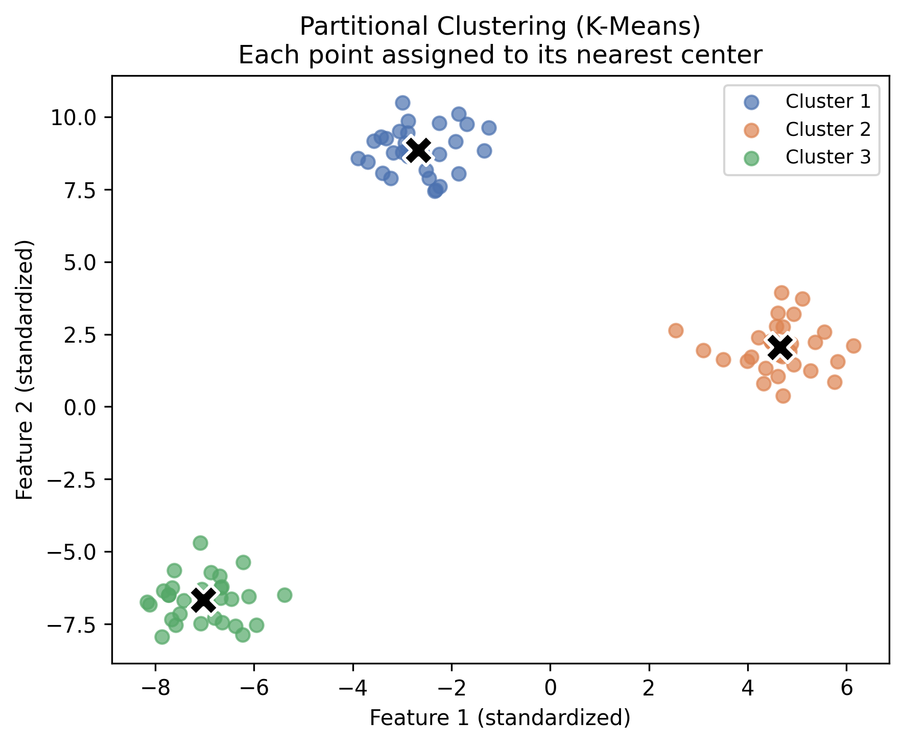
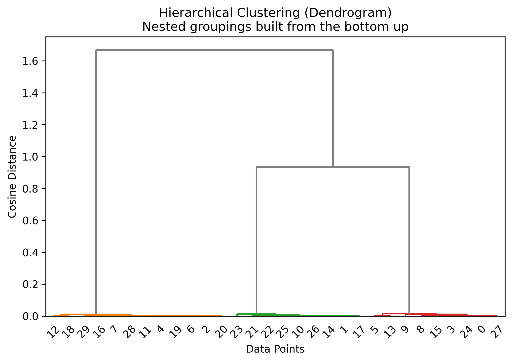
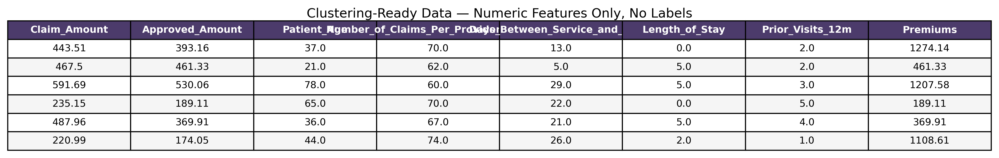
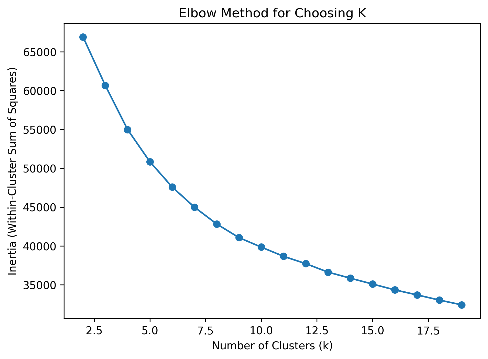
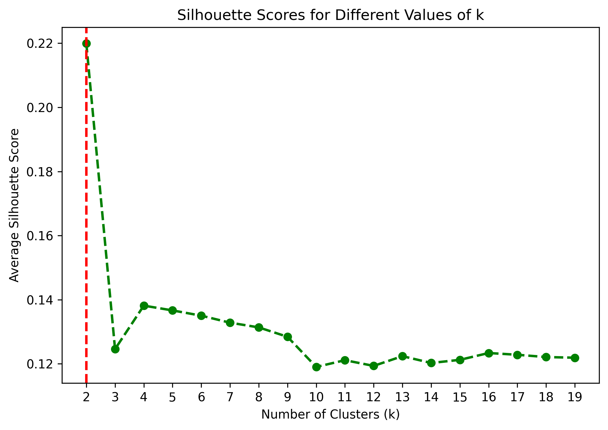
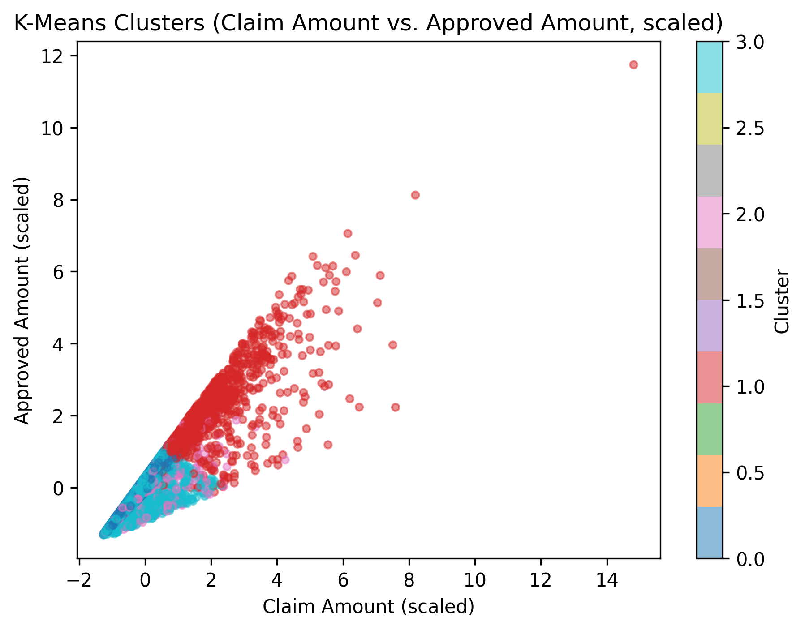
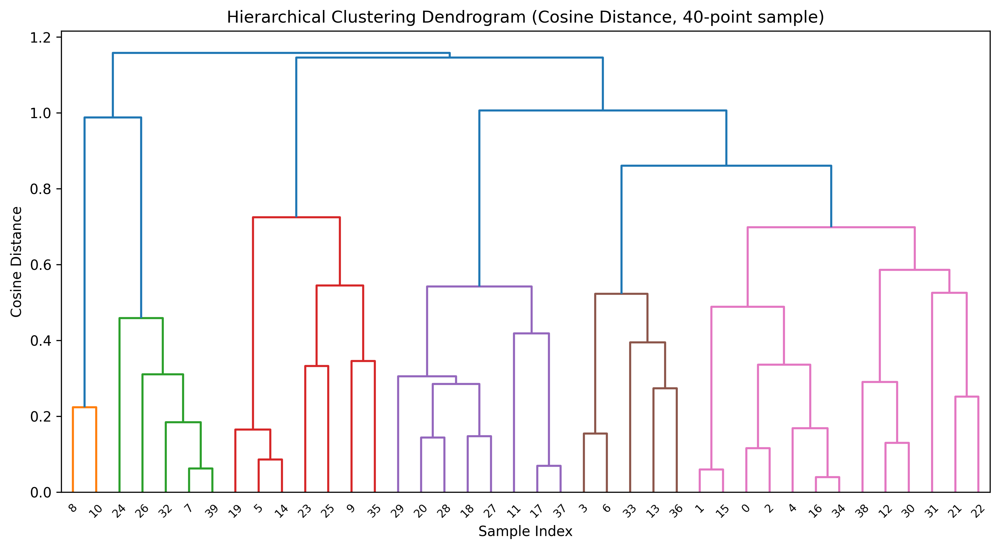

Clustering
Clustering
Overview
Clustering is an unsupervised machine learning method, meaning it doesn't rely on a labeled outcome like Is_Fraud. Instead, it groups data points together based purely on how similar they are to each other across a set of features. For this project, clustering offers a way to explore the claims data without assuming anything about fraud or cost in advance, letting natural groupings emerge on their own rather than being defined ahead of time.
There are two broad families of clustering approaches used here. Partitional clustering, such as K-Means, works by splitting the data into a fixed number of non-overlapping groups, where each point is assigned to whichever cluster center it's closest to, and those centers are repeatedly recalculated until the groupings stabilize. Hierarchical clustering, on the other hand, builds a nested structure of groupings from the bottom up, starting with every point as its own tiny cluster and progressively merging the closest ones together until everything is connected, which can be visualized as a tree-like diagram called a dendrogram.
Distance is central to both approaches, since "similarity" has to be measured somehow. K-Means in this project uses standard Euclidean distance, the straight-line distance between two points in feature space, which is the default and most common choice for partitional clustering. The hierarchical clustering in this project instead uses cosine similarity (expressed as cosine distance), which measures the angle between two data points rather than the straight-line distance between them, making it more sensitive to the overall pattern or shape of a claim's features rather than their raw magnitude.
The goal of applying clustering here is discovery rather than prediction. Since this project's core idea is that claim severity and claim frequency behave differently, clustering offers a way to check whether claims naturally separate into distinct groups, such as high-cost/low-frequency versus low-cost/high-frequency, without being told to do so. Once clusters are formed, they can also be compared against information that wasn't used to create them, like Insurance_Type or fraud rate, to see if any of the naturally discovered groups line up with patterns already explored in the EDA stage.


Data Preparation
Clustering requires only unlabeled, numeric data, since distance-based algorithms like K-Means and hierarchical clustering can't interpret text categories or a target label the way a model like Naive Bayes or Decision Trees can. For this reason, columns like Insurance_Type, State, Claim_Status, and Is_Fraud were excluded from the clustering input entirely, even though they're useful elsewhere in the project. What remains is a purely numeric subset of the data: Claim_Amount, Approved_Amount, Patient_Age, Number_of_Claims_Per_Provider_Monthly, Days_Between_Service_and_Claim, Length_of_Stay, Prior_Visits_12m, and Premiums.
Before clustering, every feature was also standardized (scaled to have a mean of 0 and a standard deviation of 1), since features like Claim_Amount and Patient_Age sit on very different numeric scales, and an unscaled distance calculation would let the larger-scale features dominate the result.
Link to the clustering-ready sample data (CSV): clustering_data.csv

Results
K-Means clustering was tested across a wide range of k values, from k = 2 through k = 19, to compare how the clustering structure changed as the number of groups increased. This satisfies testing well beyond the minimum of three values, and the full range is visible in both the elbow chart and the silhouette chart below.


This is worth being upfront about: k = 4 was the value used earlier in this project for the main K-Means and hierarchical comparison, but the Silhouette method is telling us that wasn't actually the best-separated choice, just a reasonable local option. This is a legitimate and common outcome in real clustering work, not a mistake, and it's worth reporting plainly rather than reworking the results to force an agreement that isn't really there.
At k = 4, the final K-Means solution produced four clusters of sizes 3,998, 3,901, 1,331, and 770. Two large, similarly sized clusters account for the majority of the data, while two smaller clusters capture a meaningfully smaller subset.

Hierarchical clustering was then applied using cosine distance as the similarity measure, first visualized on a 40-point sample to keep the dendrogram readable.

When hierarchical clustering was applied to the full dataset using k = 4, to allow a direct comparison with the K-Means result, it produced cluster sizes of 4,903, 2,277, 2,108, and 712. Comparing the two methods at the same k, both agree on a similar overall shape: one noticeably larger cluster, two mid-sized clusters, and one consistently smaller cluster sitting around 700–800 points. That smallest cluster showing up independently in both methods, despite using entirely different distance metrics, is the strongest point of agreement between the two approaches, and suggests that subgroup of claims genuinely stands apart from the rest of the data in some meaningful way.
Where the two methods diverge is in how many clusters they'd naturally suggest if left to choose on their own: the Silhouette method points toward k = 2 as the strongest overall fit for K-Means, while the dendrogram's natural branching suggests something closer to 6 for hierarchical clustering. This disagreement itself is a meaningful result, not a contradiction to resolve, since it reflects the two methods measuring similarity in fundamentally different ways on data that, as the earlier correlation heatmap showed, doesn't have strong, clean relationships between its numeric features to begin with.
| Rank | K-Means (Euclidean) | Hierarchical (Cosine) | ||||
|---|---|---|---|---|---|---|
| Cluster | Claims | Share | Cluster | Claims | Share | |
| 1 (largest) | 3 | 3,998 | 40.0% | 0 | 4,903 | 49.0% |
| 2 | 0 | 3,901 | 39.0% | 3 | 2,277 | 22.8% |
| 3 | 1 | 1,331 | 13.3% | 1 | 2,108 | 21.1% |
| 4 (smallest) | 2 | 770 | 7.7% | 2 | 712 | 7.1% |
Conclusions
The Silhouette method was used, tested across every value of k from 2 to 19, and it pointed clearly to k = 2 as the best-separated choice, with k = 4 only standing out as a smaller secondary option.
What this clustering work reveals about the project's core topic is more nuanced than a clean story of "claims naturally fall into four risk tiers." Instead, the evidence across K-Means, hierarchical clustering, the elbow method, and the silhouette method all points toward a dataset where claims mostly resemble one another, with the clearest, most defensible split being a broad two-group division rather than several sharply distinct categories. At the same time, both clustering methods consistently identified one smaller subgroup of a few hundred claims that stood apart from the rest, independent of which distance metric was used, which is a meaningful signal worth investigating further, possibly by checking whether that smaller cluster overlaps with claims already flagged as fraudulent, or with a particular insurance type or claim type.
This result reinforces something already observed in the EDA stage, where the correlation heatmap showed weak relationships between most numeric features. If the underlying features don't strongly relate to one another, it makes sense that clustering wouldn't uncover many sharply separated groups either, since clustering, like correlation, depends on real structure existing in the data to find. Rather than undermining the project, this is a legitimate and honest finding: claim severity and frequency in this dataset don't appear to be driven by a small number of clean, separable categories, which supports the broader argument that more detailed, feature-level modeling, like the regression and ensemble methods planned later in this project, may be better suited to capturing risk than a simple clustering-based segmentation would be on its own.